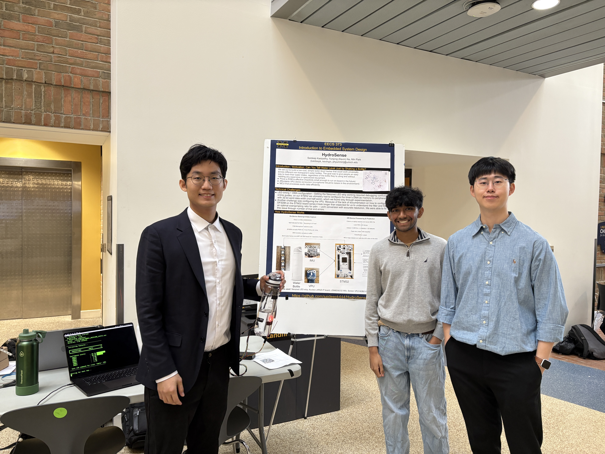
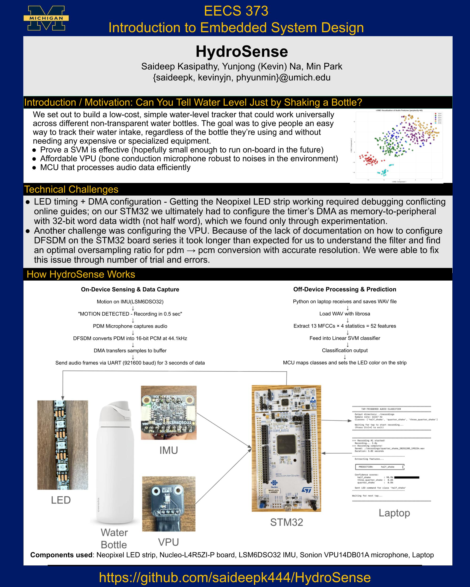

HydroSense

HydroSense is a low-cost, bottle-agnostic water-level tracker built on an STM32 microcontroller. The core insight: pouring water produces an audio signature that changes predictably with the amount of water in the bottle. We classify these signatures with an SVM — no camera, no ultrasonic sensor, just a bone-conduction microphone attached to the bottle.
The system targets anyone who needs to track their water intake without expensive or specialized hardware. It runs on-board (STM32 + Nucleo-L4R5ZI-P) and maps the SVM output directly to a NeoPixel LED strip for real-time feedback.
System poster

Demo — 300 mL bottle
Demo — 700 mL bottle
How it works
A Sonion VPU14DB01A bone-conduction microphone captures audio via PDM at 44.1 kHz. The STM32 converts PDM to PCM, then streams 3-second WAV frames over UART to a Python host. The host extracts 13 MFCCs × 4 statistics = 52 features per frame and runs them through a linear SVM classifier. The predicted class is sent back over UART and the STM32 maps it to a colour on the NeoPixel strip.
The main engineering challenges were (1) configuring STM32's timer DMA as memory-to-peripheral — the half-word constraint required working around conflicting peripheral documentation — and (2) tuning DFSDM's PDM-to-PCM conversion to hit the optimal oversampling ratio for accurate resolution.
Stack
STM32 (Nucleo-L4R5ZI-P) · LSM6DSO32 IMU · Sonion VPU14DB01A VPU microphone · NeoPixel LED strip · UART · PDM/PCM · MFCC feature extraction · Linear SVM · Python (librosa) · Figma (UI mockup)